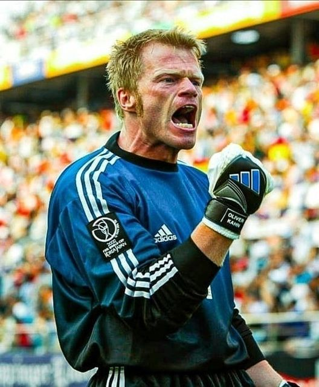

Historia del Premio Lev Yashin y el guante de oro
El Guante de Oro se entrega al mejor portero del torneo. Este trofeo recibía el nombre de Premio Lev Yashin antes del Mundial de 2010, en honor al legendario portero soviético Lev Yashin.
Ganadores del Premio Lev Yashin y guante de oro
-
Estados Unidos 1994 - Michel Preud'homme
El arquero participó en dos Mundiales, el de 1990 (donde alcanzó los octavos) y el de 1994. En este último demostró sus grandísimas cualidades en todo el torneo, donde llegó hasta octavos. Su actuación más memorable fue en el partido ante la selección neerlandesa, venciendo por 1-0 y ganando el Premio Lev Yashin al mejor arquero del campeonato.
-
Francia 1998 - Fabien Barthez
Por la Selección de Francia ganó la Copa Mundial de Francia 1998, la Eurocopa del año 2000, y la Confederaciones 2003. Además ha jugado el Mundial 2002, la Eurocopa 2004 y jugó el Mundial de Alemania 2006, donde fue subcampeón con les bleus. Barthez posee el récord de partidos sin encajar goles en los Mundiales de fútbol, con 10, igualando al arquero inglés Peter Shilton.
-
Corea Del Sur/Japón 2002 - Oliver Kahn
Oliver Kahn fue el mejor arquero del Mundial de Corea-Japón 2002. Además, se convirtió en el primer arquero en ganar el Balón de Oro como mejor jugador del torneo.
 -
Alemania 2006 - Gianluigi Buffon
La squadra azzurra se proclamó campeona del mundo luego de superar por 5-3 en tanda de penales a la selección de Francia en la final. Debido a su excelente participación en el mundial fue galardonado con el Premio Lev Yashin, la distinción que recompensa al mejor guardameta de la Copa Mundial de Fútbol. Buffon se mantuvo invicto durante 470 minutos, solo recibió dos goles durante todo el torneo, uno en propia meta en el encuentro de la primera fase contra Estados Unidos, y el otro de penal en la final.
-
Sudáfrica 2010 - Iker Casillas
Casillas capitaneó a la selección campeona del mundo. En la final de la Copa del Mundo disputada ante Holanda el 11 de julio de 2010 en Johannesburgo, tuvo una portentosa actuación, cabe destacar que al igual que en las Eurocopas 2008 y 2012, Iker no recibió ningún tanto en los cruces eliminatorios. A nivel individual, recibió el Guante de Oro como mejor portero del campeonato y fue incluido en el Equipo de las Estrellas, compuesto por los mejores once jugadores del torneo.
-
Brasil 2014 - Manuel Neuer
El 13 de julio de 2014 se corona campeón de la Copa del Mundo Brasil 2014 al vencer en la final (1-0) a la selección argentina partido en el que Neuer volvió a jugar al máximo y jugándose la piel en cada balón, y Neuer es nombrado guante de oro por su gran actuación durante todo el torneo.
-
Rusia 2018 - Thibaut Courtois
El arquero de Bélgica Thibaut Courtois fue premiado con el guante de oro, que destaca al mejor guardameta de Rusia 2018 y culmina un tiempo de ensueño para el futbolista del Chelsea, reencontrado con su mejor nivel.
-
Qatar 2022 - Emiliano Martínez
El arquero de Argentina fue uno de los héroes en el camino mundialista al tricampeonato que consiguió la albiceleste en Qatar 2022. En una de sus especialidades, el arquero de 30 años detuvo un cobro desde los 11 pasos de Francia. Pero también su extraordinaria tapada de un remate de Francia al finalizar los tiempos extra fueron clave para la victoria. La FIFA le otorgó el "Guante de Oro" al mejor arquero del Mundial. Ya desde los cuartos de final fue factor al atajar dos penaltis en la agónica definición contra Países Bajos.